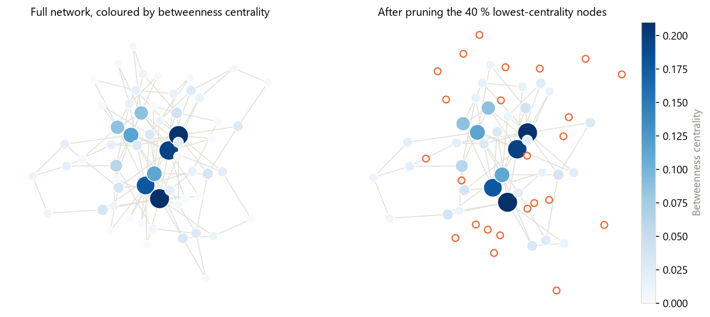

Research - Centrality-Aware Pruning, Augmentation and Reproducible Experiments
A set of research experiments on making learning systems smaller and more reliable: pruning networks by the graph centrality of their nodes, augmentation methods that make training data go further, and the tooling that keeps every experiment reproducible from one command.
Keywords

1. Introduction
A trained network is a graph, and graph theory has good tools for saying which nodes matter. Centrality-aware pruning uses them: each node is scored by how much of the network's traffic passes through it, and the lowest-scoring nodes are removed first. The experiments measure how far that can go before accuracy drops, and compare it against magnitude-based pruning. Alongside it sit augmentation studies, where the question is how much synthetic variation helps on small datasets, and a small experiment harness so that every run has a seed, a config file and a log and can be repeated exactly.
2. Goal
Goal
- Prune networks by graph centrality and measure the size-versus-accuracy curve against standard magnitude pruning.
- Evaluate augmentation methods on small datasets and report which ones help, by how much, and when they hurt.
- Make every experiment reproducible: one command, one config, one seed, one log.
3. Code and details on GitHub
The main project and its technical details are uploaded to GitHub, so please refer to the repository to understand the work in detail.
Research - Centrality 기반 Pruning, Augmentation, 재현 가능한 실험
학습 시스템을 더 작고 더 믿을 수 있게 만드는 연구 실험 모음이에요. 노드의 Graph Centrality로 네트워크를 Pruning 하는 방법, 학습 데이터를 더 멀리 쓰게 하는 Augmentation 기법, 그리고 모든 실험을 명령 하나로 다시 만들 수 있게 하는 도구예요.
키워드
1. 소개
학습된 네트워크는 그래프이고, 그래프 이론에는 어떤 노드가 중요한지 말해 주는 좋은 도구가 있어요. Centrality 기반 Pruning은 그걸 써요. 노드마다 네트워크의 흐름이 얼마나 그 노드를 지나는지로 점수를 매기고, 점수가 낮은 노드부터 제거해요. 실험은 정확도가 떨어지기 전까지 얼마나 갈 수 있는지 재고, 크기 기반 Pruning과 비교해요. 그 옆에는 작은 데이터셋에서 인공적인 변형이 얼마나 도움이 되는지 묻는 Augmentation 연구가 있고, 모든 실행에 Seed와 설정 파일과 로그가 있어서 똑같이 반복할 수 있게 하는 작은 실험 도구가 있어요.
2. 목표
목표
- Graph Centrality로 네트워크를 Pruning 하고, 크기 대 정확도 곡선을 표준 크기 기반 Pruning과 비교해요.
- 작은 데이터셋에서 Augmentation 기법을 평가하고, 어떤 것이 얼마나 돕는지, 언제 해가 되는지 보고해요.
- 모든 실험을 재현 가능하게 해요. 명령 하나, 설정 하나, Seed 하나, 로그 하나예요.
3. 코드와 자세한 내용은 GitHub에
메인 프로젝트와 기술적인 세부 내용은 GitHub에 올려 두었어요. 작업을 자세히 이해하시려면 저장소를 참고해 주세요.